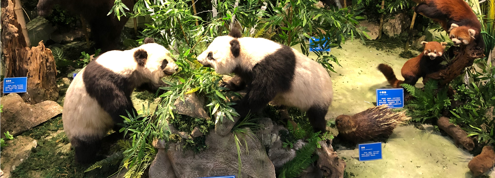
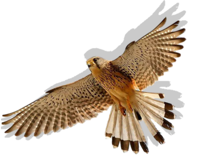
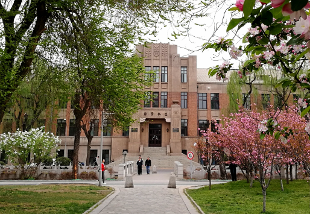
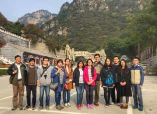

标本馆简介
/

清华大学生物标本馆
清华大学生物学系始建于1926年，是一个历史悠久、大师巨匠、立言兴学、人才辈出的学科系，自建系以来有43位在
生物系学习或工作过的校友中有43位荣膺中国科学院或中国工程院院士。1952年全国高校院系调整时清华生物系被并
入北京大学等院校。在历经了32年的沉寂之后，清华大学生物科学与技术系于1984年在一个新的起点上复系新建，新
一代清华人秉承“厚德载物，自强不息”的校训和“行胜于言”的精神，不断开拓进取，实现了跨越式的发展，书写了我
国生命科学发展史上的辉煌篇章。2009年撤系，正式成立清华大学生命科学学院。
2014年，学校对现代生命科学实验教学中心所在的生物学馆进行了全面的修缮工作，并于2015年初投入使用。一个全
新的生物学馆交由实验教学中心全面管理、使用。这个具有悠久历史的生命科学殿堂将在生命科学人才培养中发挥重要
作用。
发展历程
/
2016

2016年9月28日，标本馆正式开馆
"2016年9月28日，清华大学生命科学学院正式成立，标本馆亦于当天正式
开馆。全国政协副主席王志珍院士、清华大学前校长王大中院士、清华大
学生命科学学院院长施一公教授等领导嘉宾为标本馆开馆剪彩。自此，具
备贝类、海洋生物、爬行生物、鸟类、哺乳动物等五大常设展区和植物收
藏展室的标本馆正式向开放。"